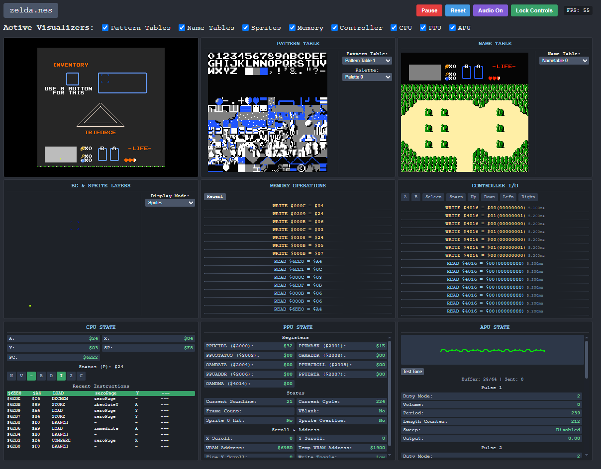
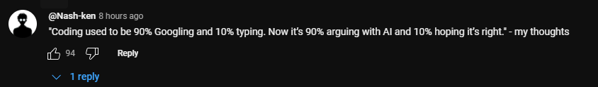
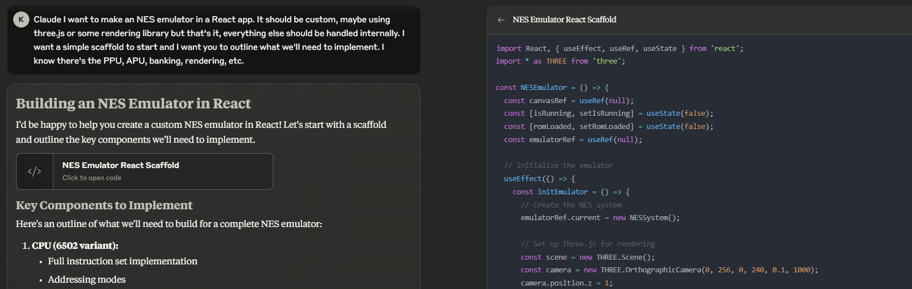
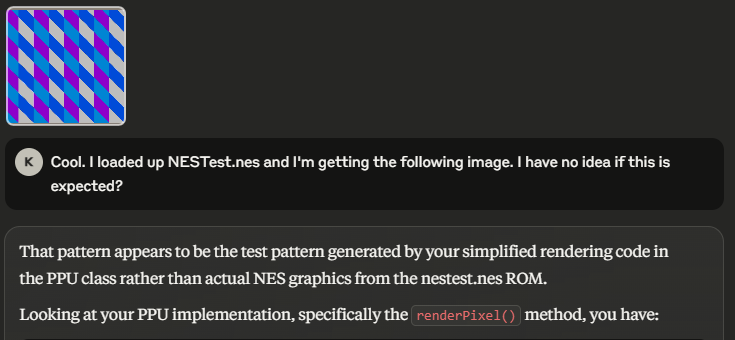
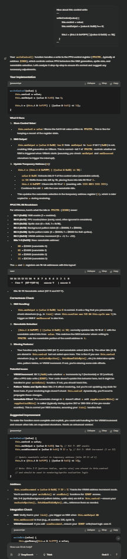
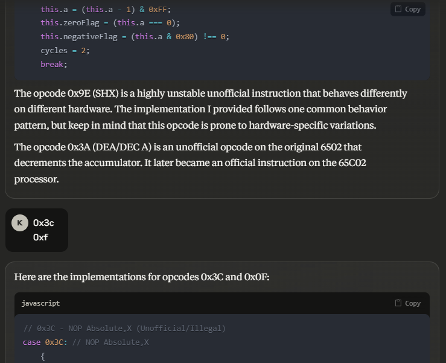
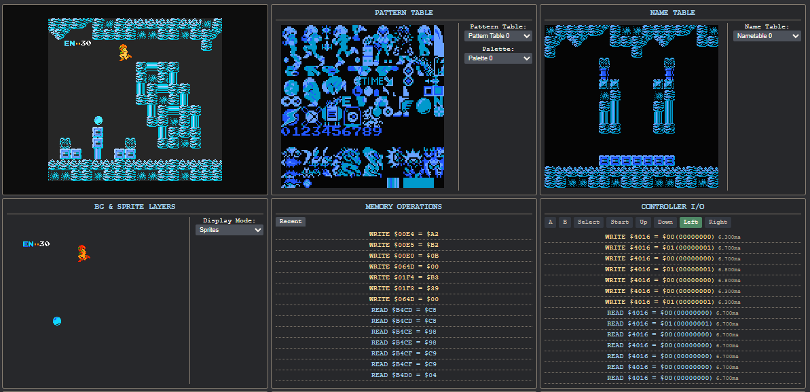
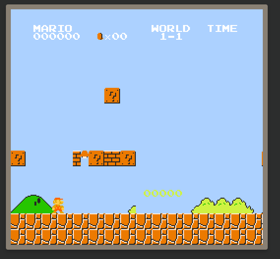

|  |
|---|
| You can play with it here |
I haven’t written a blog post in a long time. Recently, I read this post from Simon Willison.
if I do a project, the price of doing that project is that I have to write about it.
I certainly haven’t been following any such policy. I’ve done many side projects and have written about a grand total of 0 of them. I would like to change that, but I don’t think I have it in me to blog to such an extent. I did want to write about this project, however, because it made me realize just how much modern LLMs have changed the way I approach my projects.
I recently posted about how I made a feed aggregator for my phone, particularly w.r.t. the experience of using LLMs to accomplish something in about a week that, prior to ~2024, would have taken me several weeks to get to a completed state - maybe months. Dan Gant agreed, and I replied that it might even be possible to build a fully-functional NES emulator in a couple of days. From that moment, I couldn’t get the idea out of my mind.
So, I headed over to Claude and we began banging out some code. About 4 hours later, I had a (mostly) working PPU, CPU, Memory controller, and Input. 4 hours after that, I had sprites and backgrounds rendering, and games actually playing. Later that day, I got Donkey Kong working properly, and about a day later, most games were tested and working and a full visualization suite was added.
If you want to try it, click here. It runs entirely in your browser, and I squashed all of the memory leaks I could find. I mostly biased for accuracy. I couldn’t figure out a good way to properly do audio before making this blog post, though, so apologies in advance for butchering some classic sounds. It does not support mobile controls, and it may break on some tougher-to-emulate games such as Battletoads. It didn’t run Dragon Quest III or IV (I think these use some opcodes I haven’t implemented, but I’m not yet sure), and Super Mario Bros. 3 is glitched (I need to do another pass at Mappers 3 and 4).
LLM-assisted development has been on the rise for a while now. About a year ago, I was challenged to use Claude to recreate some web functionality in 24 hours after remarking that inability to steer LLMs to solve your problems is indicative of a lack of systems design skill. I turned down that challenge, not because I couldn’t do it, but because I couldn’t be bothered.
The writing has been on the wall for some time now: being able to write code is not a valuable skill. What is valuable are the priors you create to generate that code – the ability to break problems down into pieces that you can pass off to a machine that can write cleaner and better code faster than you’ll ever be able to write it and verify its results. The pendulum is only swinging farther in this direction with each new model release. Solid priors are more important than solid code.
I think the recent Fireship video on “vibe coding” exactly mirrors my own thoughts on how coding has been trending for a while now. I particularly liked this comment:
|  |
Andrej Karpathy recently spawned the term “vibe coding” to describe this new paradigm of software development. Most of his experience aligns with mine and probably anyone else who’s been using LLMs for regular coding projects. You’ve been “vibe coding” if:
These are just a couple of behaviour patterns that it seems most LLM users have mode collapsed into over the last year or so when it comes to coding. They may sound ‘normal’ or ‘obvious’ now, but prior to a year ago, I never expected that ‘the equivalent of kicking the monkey until it outputs Shakespeare’ would be the dominant way I write code in the future.
Another thing I like to think of these days is “egoless development”. It’s normal as a developer to have some ego behind the code you write. After all, if someone comes along and sees your code, and it’s shit, you are the only one who can really take responsibility for its shittiness. That’s still the case with LLMs, of course, but the pressure to perfect your code for human sensibilities is not really there for me anymore. I’m increasingly concerned with how my code looks to another LLM. I try to bake in certain abstractions that keeps the LOC down, as LLMs are still sensitive to long context situations. I’m more vigilant about feature responsibilities and scoping the right functionality in the right classes so I can just open up the relevant file, Ctrl+C and Ctrl+V without worrying about a big block of irrelevant code in the middle. I don’t care if the formatting is off - Claude will fix it later anyways. I don’t even have a formatter installed. Sometimes, I don’t even open up VS Code - I’ll just raw-dog it right there in Notepad.
|  |
|---|
| Claude putting in work |
I used Claude for this project. I like to think that each cloud LLM has their own strengths and weaknesses, and I find Claude’s strengths lie in how easily steerable he is, and how quickly he can context switch between companion-mode and cursor-mode. That strength is especially important for the “paired programming” style interactions that I like to have. I don’t use cursor and I only really use LLM APIs when I’m embedding them within a project (and in that scenario, I usually stick with Gemini because of how cheap it is).
I also love artifacts… sometimes. Other times, they’re a little annoying - especially when Claude hiccups and makes corrupted non-reversible edits, or the server just outright drops one of your artifacts during a 529. That aside, I find the ability to quickly generate SPAs, edit artifacts and focus on relevant code to be non-negotiable, and I don’t feel like making my own LLM frontend just yet - so Claude it is.
Most of the code for the final build is exactly the same as the intial code Claude gave me.
I started out asking for a React app with Three.js and a simple page for the emulator output. I ended up attaching Vite to make it build and that was it in terms of dependencies. I can actually forgo Three.js but I don’t feel like editing that part of the codebase.
I found it to be incredibly important to keep dependencies simple and popular in LLM-driven projects like this. It’s tempting to leverage the LLM’s capacity for niche libraries to do some funky stuff, but that only shifts the responsibility more towards yourself when it comes time to adding new functionality or fixing existing functionality.
Most of my React knowledge is pre 16, so to sidestep webpack I was initially leaning to Next.js, but Claude recommended Vite. I like Vite. It has one config file and it doesn’t add weird dependencies to my project. It took one command to create a server and get everything running.
Another useful thing I did early on is I asked Claude for the full directory tree of all the files we’d need to create in advance, along with a short run-down of what that file’s responsibilities are. I did this, not for me, but for future-Claude – by putting a concrete plan in the early context, I don’t have to fight Claude’s expectations of what files should exist where. Also, once Claude runs out of tokens, you can prompt “Continue” to get him to continue the last generation, including finishing the last artifact he was working on. This means I can just ask Claude to now give me all of the files, and whenever he exhausts his tokens, I just type “Continue” and go doomscroll on my phone or something.
Early on, we ran into an issue where Three.js complained about ArrayBufferView not big enough for request. This is a woefully non-descriptive error – the real problem was that we set the texture buffer to RGBFormat but it only supports RGBA. I’m not sure why it’s like that, but this was a great example of a bug that Claude couldn’t fix on his own. This actually a common death spiral in modern LLMs - whenever there is a many-many relationship between error codes and causes, Claude will just keep applying random fixes until he starts looping back around to fixes he already applied and begging you to drop console.logs all over the file. I had to step in here with some Googling to find out that it was tied to RGBAFormat. Once I let him know that, he gave me the exact fix. It will be interesting when most LLMs browse the internet so I don’t have to do this searching myself at all.
|  |
Often, I will not even look at the code Claude gives me before I run it. If it works, then great. Otherwise, I’ll just ask Claude what could be wrong. I really appreciate how far vision understanding has come in this regard. I’m honestly still wary a lot of the times of uploading an image, as the LLM will not understand the content well. I’m really excited for a future where LLMs understand images as well as they understand thousands of LOC.
In many cases, I would give Claude an entire file’s worth of code and simply follow-up with “does this look good to you? I think something’s wrong.” with no further allusion to what, if any, issues may be present. 9 times out of 10, this was enough to completely fix any issues that a previous Claude iteration had introduced – all without me taking a single peek at what he’d written. However, in the rare off-chance that he couldn’t one-shot the issue with the context provided, I found slicing up the file and giving him different chunks I felt were relevant was usually enough. All this to say, I really like not having to debug Claude’s code.
That’s not to say that Claude writes bad code, though. Claude’s – sorry, 3.7 Sonnet’s – main problem is that it has lost the ability to focus like 3.5 Sonnet had. Or, at least, that’s what I perceive. I’ll often hand 3.7 Sonnet a simple task alongside a lot of context, and he’ll take it upon himself to rewrite every single function he saw in the context window, “for completeness”. This burned through tokens very quickly. In fact, this week was the first time in a long time where I exhausted my usage cap. Fortunately, it was only for about an hour or so.
That actually reminds me of Grok. For that brief window where Claude was gone, as well as the short downtime earlier this week, I, on the advice of a friend, decided to give Grok an opportunity to wow me.
I felt that Grok was like a version of that Claude that took all of the comments he would have put in the code and instead put them in the reply. His responses were far wordier than the average Claude response, and the code:text ratio was very low. This would be amazing if I wanted to learn how an existing NES emulator worked, but I just wanted a bot that would write one for me, with enough context provided that if I needed to fix something on my own, I at least had a sense of why it wrote what it wrote.
|  |
Here, all I did was ask Grok if the 3-line $PPUCTRL write function looked fine. I prefer Claude’s way of writing a bunch of unnecessary code with a short explanation at the end. I think a Claude-like conciseness selector would work wonders here. It didn’t help that despite all of that text, in the end it told me everything looked fine (it was not fine).
|  |
|---|
| My mental is nulled at this point |
One thing I needed to be extra careful with was the NES CPU implementation. The NES uses a slightly modified MOS 6502 instruction set (“slight” is doing a lot of heavy lifting here - the only difference is that the NES does not use decimal mode in the ADC and SBC instructions). Each instruction has multiple addressing modes, and an instruction + addressing mode is referred to as an “opcode”. The main challenge is somehow implementing all of the opcodes in a way that:
Claude has really good knowledge of a lot of these opcodes. Some of them were hallucinated (like 0x3A in the image above, in reality it’s an implied no-op), but there are great resources like pagetable.com that I could use to verify them.
I originally started with individual implementations of each opcode in a giant switch statement. That worked until I loaded up Super Mario Bros., which threw a slew of Unimplemented Opcode exceptions. No problem, Claude helped me add those. Then, I loaded up Castlevania. Great, more opcodes! No problem, right Claude? Booting up Metroid made it clear that this was not going to scale. See, the MOS 6502 has 151 officially documented opcodes. That’s a lot of functions that need to be implemented.
A simple workaround we made was a dispatching system that used a pre-initialized dictionary of opcode descriptions to route the logic to a common path. After some elbow-grease, we got it working… at around 5 FPS. I spent the next several hours debugging this one issue.
We added timing closures to most of the emulator functions, profiled the frontend, and rewrote the CPU several times. I shit you not - the issue was that the pre-initialized dictionary was being allocated within the opcode dispatch call, on every cycle, on every frame. It’s the kind of mistake I would never expect a human to make, because you’d have to intentionally disregard performance as a concept to even write code in that way. It also surprised me that I never noticed it - my eyes just glazed over that part of the codebase. Presumably, Claude wrote it in this way because the context window was showing its age by this point.
It’s a great example showcasing that the bottleneck has shifted to reading and debugging code, as opposed to writing it. Could I have written an efficient dispatcher myself without the bug? Of course, but even then, it would have taken me a lot longer to finish it than Claude could. Remember that this entire project lasted a grand total of 2 days, not counting the 3rd being the writing of this blog post.
That wasn’t the first nor the last time that I’d waste time to fix a simple issue. I would end up spending most of my time on-and-offing a single tricky bug…
|  |
The NES PPU, or Picture Processing Unit, has a wide address range for games to use to control how pixels are rendered on the screen. Key to this functionality are Nametables – 1Kb chunks of memory containing tile information for the backgrounds in the game. There are 2 of these (4 is possible with certain memory mappers), and synchronizing between them is crucial for proper scrolling in games like Super Mario Bros., The Legend of Zelda, Final Fantasy and Metroid.
At some point, after having finished the CPU and cleaned up some core PPU timing, I ran into this doozy while testing Super Mario Bros.:
|  |
In this image, there are a number of issues:
For someone who has a lot of knowledge on NES internals and some passing knowledge of SMB’s ROM information, this issue may be obvious, but for me, whose last foray into NES emulation was in high school, this one had me stumped. Claude was equally as confused, coming in absolutely useless when it came to giving me fixes that didn’t break the emulation further than it already had been. I would eventually table this issue in favor of dealing with sprite rendering issues and sprite hit-detection, but this was an issue up until the day of writing this post.
What really helped debug this one was having proper visualizers. Specifically, the Nametable, Pattern Table, and BG/Sprite visualizers helped narrow down whether this was an issue with memory being written incorrectly, palettes not applying to the proper tiles, DMA syncs, etc. Without these, I wouldn’t have the context to help Claude solve this issue. Many issues that came up during development were easily one-shotted by Claude after just pasting in some code and an error message. There would, however, be cases where Claude lacked the ingenuity to explore unique failure modes – ones that he created. It wouldn’t make things any easier that all of the code was written by Claude, for Claude. If Claude couldn’t fix his own issues, what then, for the rest of us?
This problem came down to a flawed write to $PPUCTRL. Here is the bad code:
writeScroll(value) {
if (this.w === 0) {
this.x = value & 0x07;
this.t = (this.t & 0xFFE0) | (value >> 3);
this.t = (this.t & 0xFBFF) | ((value & 0x08) << 8);
this.w = 1;
} else {
this.t = (this.t & 0x8FFF) | ((value & 0x07) << 12);
this.t = (this.t & 0xFC1F) | ((value >> 3) << 5);
this.t = (this.t & 0xF7FF) | ((value & 0x08) << 8);
this.w = 0;
}
}
And here’s the corrected version:
writeScroll(value) {
if (this.w === 0) {
this.t = (this.t & ~0x001F) | (value >> 3);
this.x = value & 0x07;
this.w = 1;
} else {
this.t = (this.t & ~0x03E0) | ((value & 0xF8) << 2);
this.t = (this.t & ~0x7000) | ((value & 0x07) << 12);
this.w = 0;
}
}
Unless you work with byte shifting on a regular basis, I feel you’d be pretty hard-pressed to even tell what the functional difference was between these two pieces of code. It might be easier if I rewrite it as:
writeScroll(value) {
if (this.w === 0) {
this.x = value & 0b00000111;
const coarseX = value >> 3;
this.t = (this.t & ~0b0000000000011111) | coarseX;
this.w = 1;
} else {
const fineY = (value & 0b00000111) << 12;
this.t = (this.t & ~0b0111000000000000) | fineY;
const coarseY = (value & 0b11111000) >> 3;
const coarseYShifted = coarseY << 5;
this.t = (this.t & ~0b0000001111100000) | coarseYShifted;
this.w = 0;
}
}
The issue is that the bad code touched the 10th and 11th bits of this.t, the temporary memory register, whereas the correct code does not touch those bits as they are written to by a different function. This is just one of many subtle addressing issues that took me forever to track down because, at least for me, as a human, it’s difficult to spot incorrect writes in HEX format. Hell, even Claude had a tough time tracking this one down. The only reason I was able to fix this one was because Claude is incredibly sycophantic. By spamming this function over and over and telling him there was “something wrong in here, I just know it!”, he was able to finally collapse onto a solution.
This is yet another example that, while code should be biased for easy processing by LLMs, it also helps if certain things are done to ease debugging by human eyes. Had all reads and writes been done using binary instead of hex addressing, it would have been easier for me to see that the bad code was writing to the wrong bits.
One of the critical components that we weren’t able to get to a satisfying state was the APU, the Audio Processing Unit. For one, in Castlevania, Richter’s whip doesn’t make any noise, when it should be using the (aptly-named) noise channel. The previous APU implementation had a lot of audio popping and crackling due to buffer underruns in the AudioWorklet, and the new version doesn’t have that so it’s moderately better. There are random moments where audio is delayed and needs to catch up, or it cuts out because the buffer is empty and fills from the back, but we can’t just shift processing to the front because we end up weird clipping. I don’t know. I spent 2/3 days on this, and I could definitely fix those with more time. What I did learn is that I really don’t like having to work with AudioWorklets. I just don’t.
I like to imagine Claude as a Parisian baker in his 20s. Other times, I’ll imagine myself as Gordon Ramsay and he, my student who can’t get the fucking sauce right. Grok just sounds like a burly Russian dude, idk. “Grok”. “Grok”. Say it 6 times fast and maybe you’ll see it too.